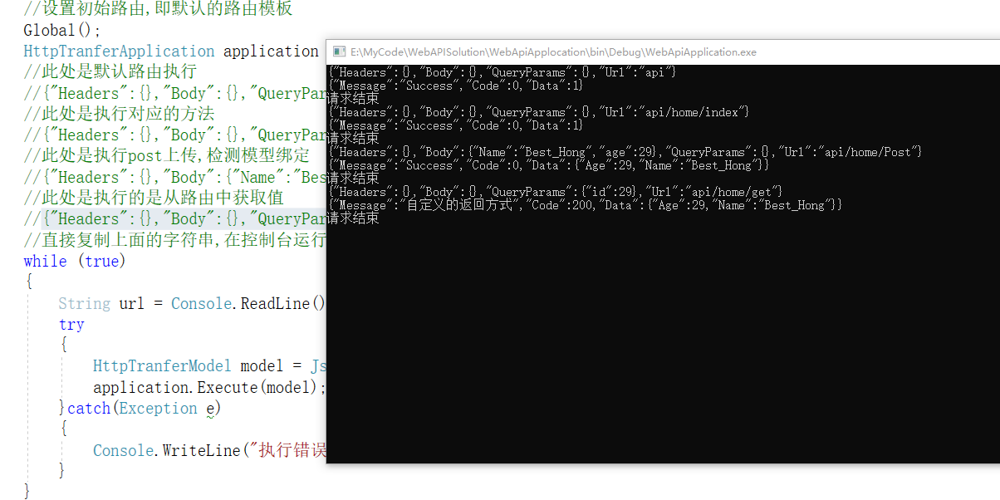
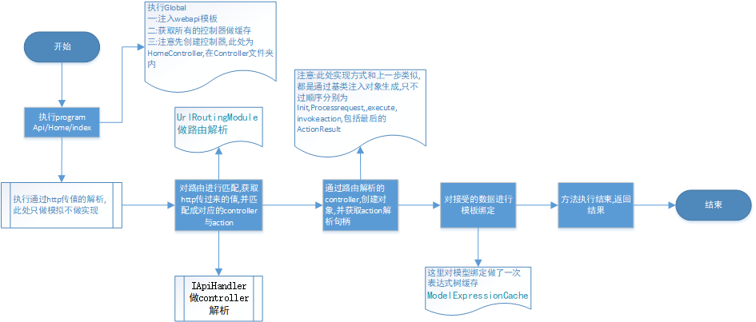

原文连接:https://www.cnblogs.com/yichaohong/p/11579598.html
前言:此文为极简mvc式的api框架,只当做入门api的解析方式,并且这里也不算是mvc框架,因为没有view层,毕竟现在大部分都属于前后端分离,当然也可以提供view层,因为只是将view当做文本返回.
github地址:https://github.com/BestHYC/WebAPISolution.git
演示例子:

目标:
1.针对Home/default进行解析.2.提供简单的httpcontext处理.3.对mvc的框架有个最简单的了解.4.一步步通过好的框架风格,建立自己的框架风格
关键还有一点就是很多东西比你想的还简单,难得是里面可扩展可维护的实现方式以及面面俱到的安全验证.但是前人栽树后人乘凉,我们借鉴就好.
一:创建controller对象
目标:通过工厂模式,获取所有controller,并创建其对象
1.1.定义接口,并定义所有Controller继承的基类ApiBaseController
public interface IApiController
{
}
public abstract class ApiBaseController : IApiController
{
}
模拟创建一个Controller,这就是我们自己定义的控制器,其实就是你自己实现的控制器
public class HomeController : ApiBaseController
{
}
1.2.通过工厂模式,通过名称调用对应的控制对象,因为控制器基本上不会改变,然后通过name找到对应的控制器
public interface IControllerFactory
{
IApiController CreateController(String name);
}
public class DefaultControllerFactory : IControllerFactory
{
private static List<Type> controllerTypes = new List<Type>();
static DefaultControllerFactory()
{
Assembly assembly = Assembly.GetExecutingAssembly();
foreach (Type type in assembly.GetTypes().Where(type => typeof(IApiController).IsAssignableFrom(type)))
{
controllerTypes.Add(type);
}
}
public IApiController CreateController(String name)
{
if (name.IndexOf("Controller") == -1) name += "Controller";
Type controllerType = controllerTypes.FirstOrDefault(c => String.Compare(name, c.Name, true) == 0);
if (controllerType == null)
{
return null;
}
return (IApiController)Activator.CreateInstance(controllerType);
}
}
ok,这样就可以取个简单的控制器工厂模式.
二:既然控制器已经创建,那么同样的情况调用里面的方法,目前home/default,会直接解析成default方法
1.先简单的实现出调用方法
public interface ActionInvoker
{
void InvokeAction(Object type, String actionName);
}
public class DefaultActionInvoker : ActionInvoker
{
public void InvokeAction(Object controller, String actionName)
{
MethodInfo methodInfo = controller.GetType().GetMethods().First(m => String.Compare(actionName, m.Name, true) == 0);
methodInfo.Invoke(controller, null);
}
}
此处非常简单,就直接调用对应的方法名即可,这就是webapi在解析路由中出现的最简单的实现方式,
其实理论就是如此简单,没其他人想的那么困难,接下来开始会做修饰,一步步来构建一个也是简单,但是稍微有点健全的api
三:优化代码,针对控制器及方法做缓存


/// <summary>
/// 全局所有IApiController类型的操作都是由此处进行缓存
/// 其他地方只做类型处理,比如 A/B,那么是对应的是AController 还是A,都是其他地方做处理
/// 注意此处,只当做类型及方法的缓存,不做任何对执行返回结果及传递对象的处理,保持功能单一
/// 保持路径单一,即A/B中A控制器只有1个,B方法也只有1个,即使有重载,也必须得通过 路由名 进行区分
/// </summary>
internal static class ApiControllerActionCache
{
private static Dictionary<String, Type> s_controllerTypes = new Dictionary<string, Type>();
private static Dictionary<Type, ActionCache> s_actionCache = new Dictionary<Type, ActionCache>();
static ApiControllerActionCache()
{
Assembly assembly = Assembly.GetExecutingAssembly();
foreach (Type type in assembly.GetTypes().Where(type => typeof(IApiController).IsAssignableFrom(type)))
{
String name = type.Name;
if(type.GetCustomAttribute<PreRouteAttribute>() != null)
{
name = type.GetCustomAttribute<PreRouteAttribute>().PreRouteName;
}
if (s_controllerTypes.ContainsKey(name)) throw new Exception($"{name}存在相同的路由名,请保持路由唯一");
s_controllerTypes.Add(name, type);
s_actionCache.Add(type, new ActionCache(type));
}
}
public static Type GetController(String controllername)
{
if (!s_controllerTypes.ContainsKey(controllername)) throw new Exception("没有此路由对应的类型");
return s_controllerTypes[controllername];
}
/// <summary>
/// 通过路由值获取对应的委托方法
/// </summary>
/// <param name="controllername"></param>
/// <param name="actionname"></param>
/// <returns></returns>
public static Func<IApiController, Object[], Object> GetMethod(Type controller, String actionname)
{
if(!s_actionCache.ContainsKey(controller)) throw new Exception("没有此路由对应的类型");
ActionCache cache = s_actionCache[controller];
if (!cache.ContainsKey(actionname)) throw new Exception("没有此路由对应的方法");
return cache.GetMethodInfo(actionname);
}
}
public class ActionCache
{
private Dictionary<String, MethodInfo> m_methodinfo;
private Dictionary<MethodInfo, Func<IApiController, Object[], Object>> m_FuncCache ;
public MethodInfo this[String name]
{
get
{
return m_methodinfo[name];
}
}
public Boolean ContainsKey(String name)
{
return m_methodinfo.ContainsKey(name);
}
private Object m_lock = new Object();
/// <summary>
/// 可以考虑延迟加载
/// </summary>
/// <param name="type"></param>
public ActionCache(Type type)
{
m_methodinfo = new Dictionary<String, MethodInfo>();
m_FuncCache = new Dictionary<MethodInfo, Func<IApiController, object[], object>>();
foreach(MethodInfo info in type.GetMethods())
{
String name = info.Name;
if(info.GetCustomAttribute<RouteAttribute>() != null)
{
name = info.GetCustomAttribute<RouteAttribute>().RouteName;
}
if (m_methodinfo.ContainsKey(name)) throw new Exception($"{type.Name}中{name}重复,请保持路径唯一");
m_methodinfo.Add(name, info);
}
}
/// <summary>
/// 通过名称获取对应的委托
/// </summary>
/// <param name="methodInfo"></param>
/// <returns>IApiController:传递的执行方法, Object[]:方法参数, Object 返回值,void为空</returns>
public Func<IApiController, Object[], Object> GetMethodInfo(String methodName)
{
MethodInfo methodInfo = m_methodinfo[methodName];
if (!m_FuncCache.ContainsKey(methodInfo))
{
lock (m_lock)
{
if (!m_FuncCache.ContainsKey(methodInfo))
{
m_FuncCache.Add(methodInfo, CreateExecutor(methodInfo));
}
}
}
return m_FuncCache[methodInfo];
}
private Func<Object, Object[], Object> CreateExecutor(MethodInfo methodInfo)
{
ParameterExpression target = Expression.Parameter(typeof(Object), "target");
ParameterExpression arguments = Expression.Parameter(typeof(Object[]), "arguments");
List<Expression> parameters = new List<Expression>();
ParameterInfo[] paramInfos = methodInfo.GetParameters();
for (Int32 i = 0; i < paramInfos.Length; i++)
{
ParameterInfo paramInfo = paramInfos[i];
BinaryExpression getElementByIndex = Expression.ArrayIndex(arguments, Expression.Constant(i));
UnaryExpression converToParamterType = Expression.Convert(getElementByIndex, paramInfo.ParameterType);
parameters.Add(converToParamterType);
}
UnaryExpression instanceCast = Expression.Convert(target, methodInfo.ReflectedType);
MethodCallExpression methodCall = Expression.Call(instanceCast, methodInfo, parameters);
UnaryExpression converToObjectType = Expression.Convert(methodCall, typeof(Object));
return Expression.Lambda<Func<Object, Object[], Object>>(converToObjectType, target, arguments).Compile();
}
}注意:此处对全局controller做了一次缓存,限制为不会通过传的参数进行判定使用哪个方法,只允许单个接口存在,即
1.如果在不同空间下具有相同类型名的,必须具有不同的preroute特性限定,
2.如果一个类方法重载,得通过route特性限定唯一标识
3.表达式树是通过创建一个委托,传递当前的controller对象调用对应的方法
以上并不算框架,只属于单一调用方法功能实现,并做优化,接下来属于API框架实现
四:API实现首先得确定传输的值及协议标准,
4.1.确定传输中的必须信息,去掉其他所有的额外信息后有如下几点,为求简单,先全部保存成字符串形式:
从哪里来(URlReferrer),到哪里去 URL(请求的接口),
URL请求的参数(a/b?query=1中的query值解析),body中保存的值(frombody),包含的请求头参数(Headers)
所有请求处理完成后,返回的值信息
public class HttpRequest
{
/// <summary>
/// 从哪里来的
/// </summary>
public String UrlReferrer { get; }
/// <summary>
/// 到哪里去
/// </summary>
public String Uri { get; set; }
/// <summary>
/// Uri请求参数处理
/// </summary>
public String QueryParams { get; set; }
/// <summary>
/// 请求的内容
/// </summary>
public String RequestContent { get; set; }
/// <summary>
/// 请求头参数
/// </summary>
public String Headers { get; set; }
}
public class HttpResponse
{
/// <summary>
/// 返回的内容
/// </summary>
public String ResponseContent { get; set; }
}
public class HttpContext
{
public HttpRequest Request { get; }
public HttpResponse Response { get; }
}
此处只是单纯做展示使用,在后期会写一个MQ中间件时候,在做扩展.只展示HttpContext
4.2.对Http请求做一个统一接口处理
public class UrlRoutingModule : IRoutingModule
{
public void Init(HttpBaseContext context)
{
}
}五:通过路由模板收集
5.1.在写API的时候,会添加一个defaultapi匹配路由,注意:这里以MVC的解析规则实现
RouteConfig.RegisterRoutes(RouteTable.Routes);
public static class RouteConfig
{
public static void RegisterRoutes(RouteCollection routes)
{
routes.IgnoreRoute("{resource}.axd/{*pathInfo}");
routes.MapRoute(
name: "DefaultApi",
routeTemplate: "api/{controller}/{action}/{id}",
defaults: new { controller = "Home", action = "Index", id = UrlParameter.Optional }
);
}
}5.2.考虑此模板的功能及实现方式
1.因为可能有多个默认匹配,并且执行的是顺序加载过程,所以有个RouteTable静态类收集全局模板路由
2.路由有对应的默认路由及路由值(Route RouteData)及收集Collection
3.Route实现路由解析,并提供RouteData值,并提供实现
4.在解析Route的时候,通过生成的路由句柄DefaultRouterHandler去RouteData进行后续处理
5.通过DefaultApiHandler对路由进行解析,生成对应的控制器
6.通过controller,对当前的action进行解析,并绑定路由
7.调取当前执行的方法后,获取返回的值对象,并对返回值进行处理
大体的模型调用过程如图

6:实现代码:请查看对应的github地址
https://github.com/BestHYC/WebAPISolution.git
7.例子:(已经准备好对应的json序列化解析,赋值粘贴即可,看上图)